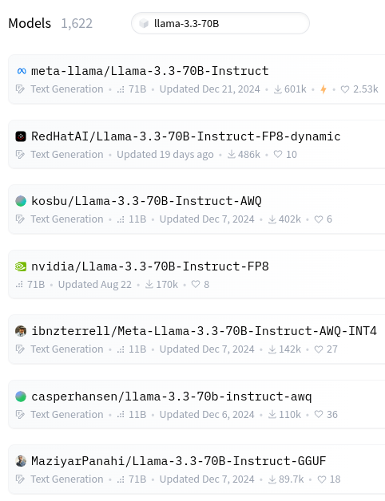

LLM formats Overview¶ Formats of LLM models Formats of numbers Quantization of LLM Quantization and performance Formats of LLM models¶ So you want to use a LLM model¶  What the name means¶ Llama-3.3: model (architecture) 70B: size / number of parameters Instruct: fine-tuning AWQ-INT4: quantization GGUF: model format File-formats of LLMs¶ The gguf file fomat (image from huggingface)